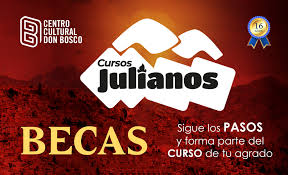
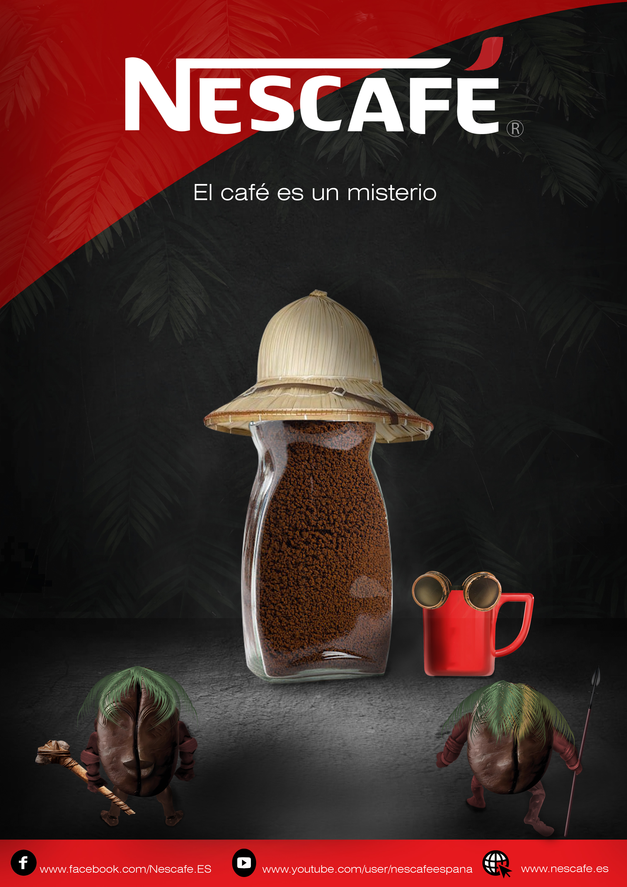

Galeria

Marca cursos julianos(Este diseño es la imagen del rediseño 2024 de la marca " Cursos Julianos " del Centro Cultural Don Bosco. La actualización moderniza su logo y destaca la oferta de BECAS , invitando a los interesados a unirse a sus cursos con 16 años de trayectoria.)
Campaña publicitaria y el rebranding de MARAN-ATA a las NACIONES por su XVI Aniversario . El diseño combina la celebración ("¡ESTAMOS DE FIESTA!") y la renovación de su identidad visual (el nuevo logo) con su misión fundamental, citando Mateo 28:19. La imagen comunica alegría, renovación y su compromiso con la expansión global .

Esta es una campaña publicitaria de NESCAFÉ que explora el concepto "El café es un misterio". Utiliza una imagen surrealista y humorística , personificando el café con un toque de aventura y descubrimiento.